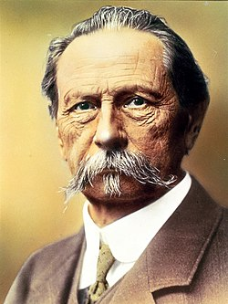

Karl Friedrich Michael Benz
Carl Benz (Karl Friedrich Michael Benz, eredeti nevén Karl Friedrich Michael Vaillant) (Karlsruhe, 1844. november 25. – Mannheim, 1929. április 4.) német mérnök, a modern gépkocsitechnika egyik úttörője. 1885-ben megépítette kétütemű gázmotorját, 1886-ban pedig bemutatta már egy lóerős, négyütemű motorral hajtott, háromkerekű járművét. Sok gépjárművel kapcsolatos szabadalmat jegyzett és tökéletesítette a villanygyújtást is. 1883-ban alapított cége, a Benz & Cie, Rheinische Gasmotorenfabrik, 1926-ban egyesült a Daimler Motorengesellschafttal, létrehozva a Daimler–Benz AG-t.
Egy mozdonyvezető családjában látta meg a napvilágot. Apját 1846-ban elvesztette. A Karlsruhei Polytechnikum elvégzése után, 1864 és 1871 között számos vállalatnál dolgozott művezetőként, tervezőként, míg 1871-ben üzleti kapcsolatba került Mannheimben August Ritter mérnökkel. A két társ között hamarosan feszültségek keletkeztek és Benz elérte, hogy Ritter távozzon a cégtől. 1872. július 20-án feleségül vette Bertha Ringert, aki 95 éves korában, 1944 májusában hunyt el. Karl Benz vasöntödei és szerelőműhely-vállalkozása nehéz pénzügyi helyzetben volt, és ekkor – nem sokkal a skót Dugald Clerk után – sikeresen fejlesztett ki egy kétütemű motort. Két évi munka után, 1879 elején készen állt első motorja. Számos szabadalmat kapott és új üzleti kapcsolatokat szerzett, amelyek révén gázmotorgyárat alapított Mannheimben. Benz, aki idejét és energiáját jórészt kutatásainak kívánta szentelni, újabb konfliktusok után megvált a cégtől. Ismét talált két partnert, és 1883. október 1-jén Max Kaspar Roséval és Friedrich Wilhelm Esslingerrel megalapította a „Benz & Cie, Rheinische Gasmotorenfabrik Mannheim” nevű céget. Ekkor már négy gyermekről kellett gondoskodnia, legkisebb gyermeke később, 1890-ben született. Pénzügyi biztonsággal a háta mögött kutatásait nagy intenzitással folytatta. Gottlieb Daimlerrel szemben, aki csak a motort állította elő, Karl Benz a megfelelő jármű kialakításáról is gondoskodott. Nem véletlen, hogy a benzinüzemű személygépkocsi feltalálójának a műszaki történetírók túlnyomó többsége világszerte Karl Benzt tartja. 1886. január 29-én kapott szabadalmat a német Császári Szabadalmi Hivataltól 37435-ös szám alatt „gázmotor hajtású járművére”. Benz járművének, a Patent-Motorwagennek a nyilvános bemutatására 1886. július 3-án került sor. Cége, a világ első autógyára, 1886 és 1893 között 69 autót készített. 1890-ben ismét pénzügyi nehézségek adódtak; a két új partner Friedrich von Fischer és Julius Ganss voltak. 1903-ban nézeteltérése támadt főkonstruktőrével, Marius Barbarou-val, mivel mindketten magukénak vallották a sikeres Parsifal modell szerzőségét. A vita következtében Karl Benz otthagyta a saját nevét továbbra is viselő céget. 1906-ban csatlakozott két idősebb gyermeke, Eugen Benz és Richard Benz cégéhez. 1912-ben innen vonult vissza, immár véglegesen. Öregkorára több megtisztelés érte: tagja volt eredeti cége, majd 1926-tól a Daimler-Benz AG vezetőségének. Rövid betegség után – 84 éves korában – hunyt el. Vissza a főoldalra